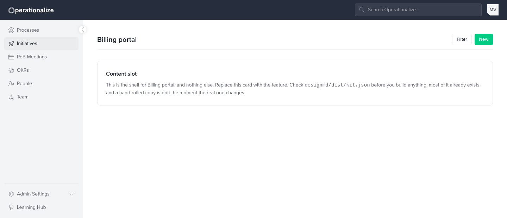
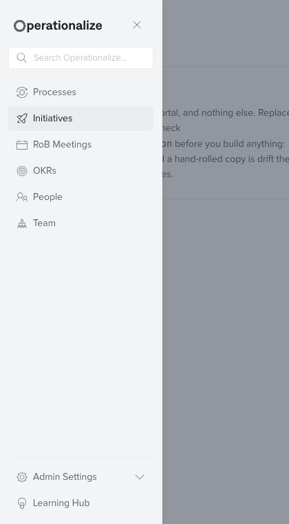

Master prompt
A copy-paste prompt for getting started with this project. Hand it to a coding agent (Claude Code, Cursor, …) and it duplicates designmd/template/ into a new feature prototype, resolves the sidenav and lists it — then builds the feature into the shell.
Nothing here is generated from memory. template/index.html is a real file that
lints and inlines like any other prototype, so the shell a feature starts from is the shell
the system ships today. Change the top bar in components.css, update the template
once, and every prototype made afterwards has it.
How to use it
- Copy the prompt below.
- Replace
{{FEATURE_NAME}}(kebab-case) with your feature's folder name — or leave it and the agent will ask. - Paste it into your agent, run from the folder that contains
designmd/andfeatures/as siblings. This prompt is written for that Toptal layout; on a standalone clone, pass--into <path>to the scaffolder. - Iterate locally, then lint, thumbnail and inline as the prompt describes.
In a hurry and already know the answers? Skip the prompt and run the scaffolder directly from
designmd/:
python3 tools/new-prototype.py billing-portal --title "Billing portal" --nav Initiatives
What you get
One command, before the agent has written a line of the feature. This is a real
scaffold — python3 tools/new-prototype.py billing-portal --title "Billing portal"
--nav Initiatives — screenshotted, not a mock-up.


- The three stylesheets, in order, pointed at the sibling
designmd/. - Top bar — brand, search, account, and the collapsed layout's hamburger, title and CTA.
- Side nav with the product's real sections and your one marked active, plus the off-canvas panel chrome.
- Page head — a title and the actions. No invented subtitle.
- A shell that fills the window and a content region that scrolls, with no CSS written in the page.
- The handlers the kit does not ship: modals, drawers, Escape, dropdowns, tabs, selects, the nav rail and the hamburger.
- A card in
features/index.htmland astatus.jsonentry, so the feature is listed from minute one.
The prompt
You are scaffolding a new feature prototype on the **Operationalize / Icarus design system**.
FIRST — before doing anything, settle these two things with me and wait for my answers:
1. FEATURE NAME — if `{{FEATURE_NAME}}` below is still the literal placeholder
(i.e. I pasted this without replacing it), STOP and ask me for it. Use my answer
everywhere `{{FEATURE_NAME}}` appears. Never create a file or folder literally
named `{{FEATURE_NAME}}`, and never guess a name.
2. SIDEBAR PLACEMENT — ask me how this feature sits in the left sidenav, unless I
already told you. Either (a) it belongs under an existing top-level section — I'll
name it (e.g. "I'm working in Initiatives"), so mark THAT item active and add no
new entry; or (b) it needs a brand-new nav item — I'll give you its label and
icon, so add it and mark it active. Don't guess placement; wait for my answer.
CONTEXT
- The design system lives in `designmd/`, a sibling of `features/`. It provides three
stylesheets, loaded in order: `tokens.css` (primitives) -> `semantic.css` (intent
aliases + reset) -> `components.css` (every component class). Plus `assets/logo.svg`
and an icon sprite `icons.svg`.
- The inventory is `designmd/dist/kit.json` — every class that exists, grouped. If a
class is not in there it does not exist, and inventing one renders as nothing, with
no error. Do NOT copy markup out of
`designmd/example.html`: 88 of the classes in that file are the showcase's own chrome,
styled in its <style> block and nowhere else, and they look exactly like kit classes.
Browse it to see what a component looks like; take the class name from kit.json.
Principles, colour roles and rules are in `designmd/AGENTS.md`.
- Prototypes live at `features/<feature-name>/index.html` — one folder per feature,
kebab-case, the file is always named `index.html`.
TASK — scaffold `features/{{FEATURE_NAME}}/index.html`, then build into it
1. DO NOT WRITE THE SHELL BY HAND. Duplicate the template. From `designmd/`, run
one of these, using my two answers above:
python3 tools/new-prototype.py {{FEATURE_NAME}} --title "<Title>" --nav "<Section>"
python3 tools/new-prototype.py {{FEATURE_NAME}} --title "<Title>" \
--new-nav "<Label>" --nav-icon i-<slug>
The first marks an existing sidenav section active; the second inserts a new
nav item and marks that active. Pass one or the other, never both.
It copies `designmd/template/index.html` — the shell the system ships right
now: the top bar (including `.topbar-menu` and `.topbar-title`, invisible
until the bar collapses), the side nav, the page head, and the delegated
handlers for modals, drawers, dropdowns, tabs, selects and the nav rail that
the kit does NOT carry. It then registers a card in `features/index.html`
and adds a `status.json` entry.
A generated skeleton drifts from the system the moment the system moves; a
duplicated template cannot. If the template is missing something every screen
should have, fix `designmd/template/index.html` so the next one inherits it —
never patch only your copy.
2. Build the feature into the content region, replacing the placeholder `.card`.
Leave the shell alone unless the feature genuinely needs it changed.
RULES
- CHECK THE SYSTEM BEFORE YOU BUILD. Look in `designmd/dist/kit.json` for the
thing you are about to make. Most of it is already there — toasts, modals, drawers,
switches, empty states, banners, tables. Build bespoke only after looking and not
finding it, and say so when you do. A hand-rolled copy of a component that already
exists is drift the moment the real one changes.
The order is: find the component -> if it is close, add a variant to
`components.css` -> only then write something new, in `components.css` so the next
prototype inherits it, never as a one-off in a single page.
- Use ONLY semantic tokens and existing component classes — never hardcode a hex or px
that a token covers. Colors: `var(--color-*)`. Spacing: `var(--spacing-*)`.
Type: `var(--type-*)`. Components: `.btn`, `.card`, `.table`, `.alert`, `.tabs`,
`.page-head`, `.input`, `.badge`, etc. When unsure of a component's markup, read it
from the markup already in your prototype rather than inventing classes.
- Icons come from the sprite: `<svg class="icon icon-16"><use href="#i-<name>"/></svg>`.
Every slug is listed at the end of `designmd/llms-full.txt`, and in the Iconography
gallery in `designmd/example.html`.
- The sidenav comes from the template already resolved — step 1 marked the right
item active. Don't add a `{{FEATURE_NAME}}` nav link on top of it, and don't
re-order the sections.
- Keep it a single file. Do not add frameworks, build steps or external CDNs.
- Make it responsive. BUILD LIGHT ONLY — ignore dark theme entirely. No `data-theme`
toggle, no `prefers-color-scheme` block, no dark variants, no dark-specific token
overrides. The dark palette is being rebuilt on Picasso's own values, so anything
written for it now is churn that will be thrown away.
BEFORE SHARING / DEPLOYING
- From the `designmd/` folder run: `python3 inline.py ../features/{{FEATURE_NAME}}/index.html`
to inline the whole system (zero external dependencies). It is idempotent. This also adds
the review bar (comments, inline text edits, spotlight) — turn it on with the circle
button bottom-right or `?review=1`; nothing to wire up by hand.
- Preview through the Icarus dev server so review comments persist to
`features/{{FEATURE_NAME}}/feedback.json`: add a `.claude/launch.json` entry that runs
`node /abs/path/designmd/tools/serve.mjs /abs/path/features 5733` (port 5733). When asked
to "apply the prototype comments", read that `feedback.json` (or, for the deployed site,
`GET /api/feedback?p=/{{FEATURE_NAME}}/`), implement each open comment in `index.html`,
then mark it `resolved: true` with a short `resolution`.
- Comments are shared through `api/feedback.js` (Neon Postgres) which already exists in
the prototypes repo. That is set up once per repo, not per feature — nothing to do here.
- The card in `features/index.html` is already there from step 1; the thumbnail is
not, on purpose — at scaffold time the page is an empty shell. Once there is
something to look at, from `designmd/` run:
`python3 tools/new-prototype.py {{FEATURE_NAME}} --thumb`
It shoots 1280x800 with headless Chrome against the local prototypes server
(port 5733; pass `--url` for anything else) and drops the `<img>` into the card.
Re-run it whenever the screen changes materially.
FILL IN
- {{FEATURE_NAME}} — kebab-case folder name (e.g. `billing-portal`).